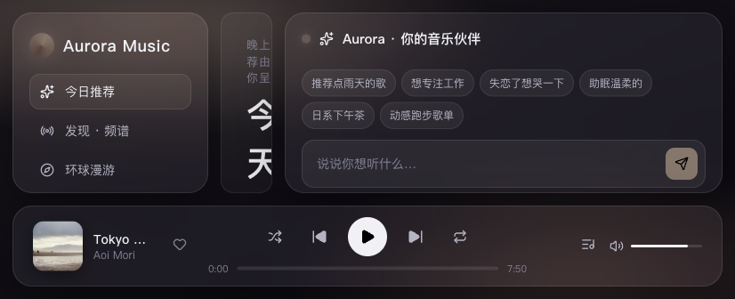

世界上不缺音乐播放器。缺的也许是一个完全按自己的感受搭起来的小空间。
我喜欢看声音怎样变成画面：低频推开一圈频谱，波形跟着振幅起伏，粒子在屏幕里留下呼吸感。这些细节不一定改变听歌效率，却能改变“正在听音乐”的感觉。
所以 Aurora 的起点不是多做一张歌曲列表。我想把城市天气、当下心情、封面颜色和声音放在一起，看它们能否组成一个有氛围的界面。
在这里，直接听一会儿
给音乐一个可以进入的空间。
点击加载后，就能在这页试听、切歌和查看频谱。也可以导入自己的本地 MP3。
现在可以试听《微光静处》，一首三分钟的钢琴与弦乐小品。天气与心情推荐仍是本地情境演示。已发布的 TZBABY 唱片请从音乐作品页收听。
播放器按需加载，开始播放由你决定。
Aurora：把感受做成一个界面
从城市天气和当下心情进入，也保留直接找歌的路径。下面是这个个人项目的实际界面。

画面要回应正在发生的声音
如果音乐暂停了，画面还按同样的速度跳动，那只是一个漂亮的循环。我要的是声音和视觉之间真实的联系。
频域数据适合驱动频谱，时域数据适合表现波形，粒子负责更松弛的空间感。它们不需要每一刻都很热闹，也应该允许安静、停顿和变化。
播放器留在底部。
浏览和对话可以变化，正在听的音乐不用重新开始。
另一部分是普通但不可少的功能：播放进度、音量、队列、收藏、本地 MP3 与 LRC 歌词导入。它们让氛围有了可以日常使用的骨架。
限制，会把注意力拉回来
试听版使用预先编排、离线渲染的完整音频文件，不依赖外部音源 CDN。旋律、音色与动态需要先被认真处理，画面才有值得回应的声音。
这种限制也让我发现，界面的流畅感经常出现在第一次使用里：用户点击播放时有没有响应，声音开始的瞬间画面是否跟上，切换视图有没有打断听感。我仍然在打磨这些衔接。
做兴趣项目，不必每次都证明一个市场机会。它让我能把一个模糊的感受，变成一个可以打开、可以使用、也可以继续改的东西。
听一会儿音乐，改一点画面。
这就是 Aurora 继续生长的方式。